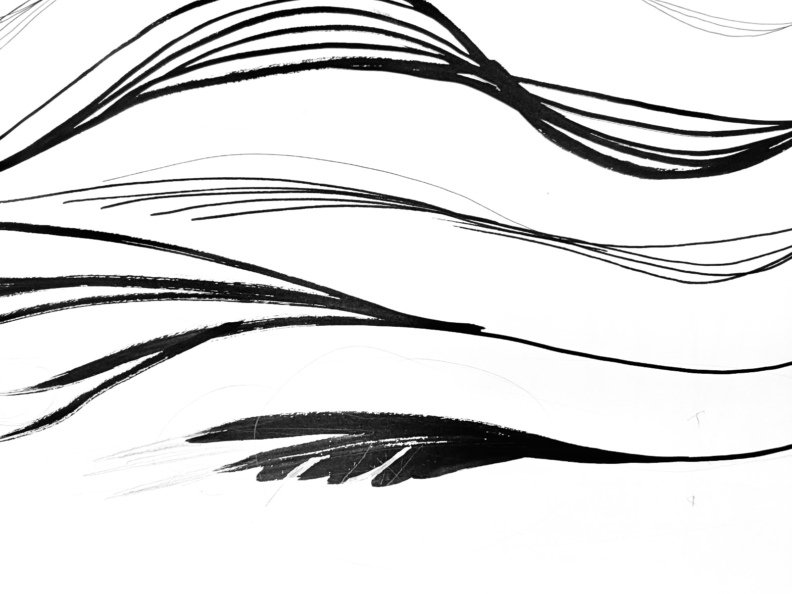
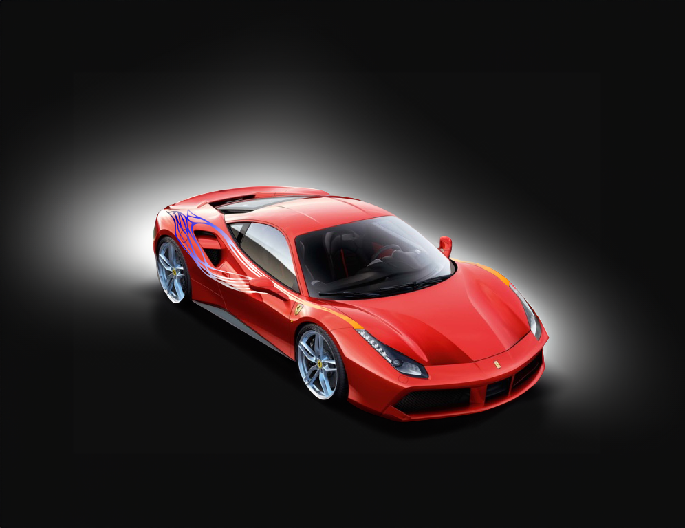

-min.png)




En équipe avec Tiphaine Mérour et l'aide d'Audrey Sabiron, nous avons participé à un projet selectif pour Rodolphe Deveaux (ex directeur du Club Ferrari France) pour le design d'une Ferrari 488 GTE dans le cadre des 24h du Mans 2024. Nous sommes arrivés 2ème mais on reste fiers.
Nous avons proposé un motif simple, épuré, qui épouse les formes de la Ferrari, pour faire référence à la plume, la vitesse et la legèreté. On a ensuite mêlé les couleurs de la France à celle de la marque. La contrainte était de créer un visuel cohérent, différent, qui est intéressant à l'arrêt et sous l'effet de la vitesse, et qui ne prend pas trop de place pour placer les sponsors.